3.2. Adding 3D Forming Operation
3.3. Defining Simulation controls
3.4. Loading material into Material list
On a Windows machine, go to the  button, select DEFORM-v1x.xxx (.xxx indicates version number E.g. v14.0.2) and select
DEFORM GUI Main v1x.x from the DEFORM v1x.xxx menu. The DEFORM GUI Main window will appear.
button, select DEFORM-v1x.xxx (.xxx indicates version number E.g. v14.0.2) and select
DEFORM GUI Main v1x.x from the DEFORM v1x.xxx menu. The DEFORM GUI Main window will appear.
New Problem dialog.
Create a new problem either by selecting File  New Problem or by clicking the New Problem
New Problem or by clicking the New Problem  icon. The Problem Setup window will appear. Select "Integrated Manufacturing Process" radio button and unit system as "SI" radio button in Unit field as shown in Fig. 3DINDL3.1. Define problem Name as “3D_Induction_Heating_HotSwitching" and make sure the “Show option dialog” check box is turned on (if we do not turn on the “Show option dialog” check box, then we will not get the New
Project dialog in MO UI). Click on
icon. The Problem Setup window will appear. Select "Integrated Manufacturing Process" radio button and unit system as "SI" radio button in Unit field as shown in Fig. 3DINDL3.1. Define problem Name as “3D_Induction_Heating_HotSwitching" and make sure the “Show option dialog” check box is turned on (if we do not turn on the “Show option dialog” check box, then we will not get the New
Project dialog in MO UI). Click on  button to open a new Problem using the Deform Integrated Manufacturing Process.
button to open a new Problem using the Deform Integrated Manufacturing Process.
Multiple operation wizard will open with the New Project dialog, at this point user will be prompted to specify a project name (system will create a separate folder with this project name) and title for this session. In this session, we will
use “3D_Induction_Heating_HotSwitching" as the project name (see Fig. 3DINDL3.2.).
Click on  to continue to open the operation.
to continue to open the operation.
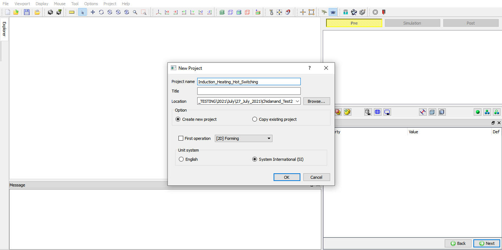
New Project Window in Multiple Operation Wizard.
Multiple Operation wizard will open, add one 3D Forming operation from Operations list in Explorer by clicking  button as shown in Fig. 3DINDL3.3.
button as shown in Fig. 3DINDL3.3.
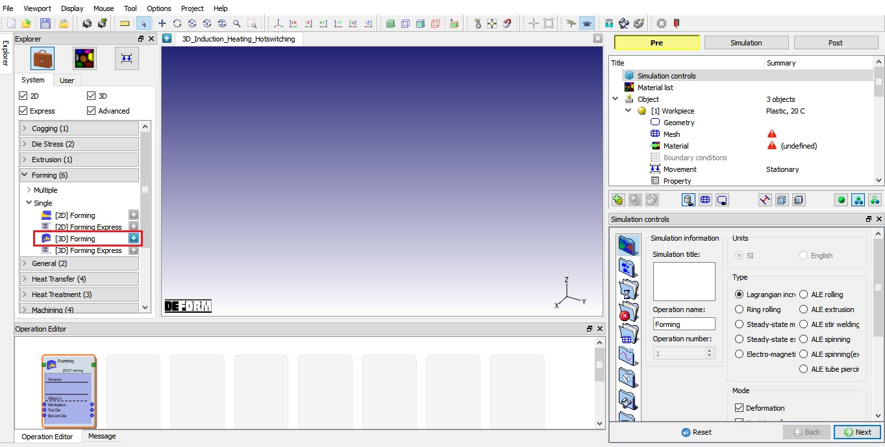
Adding 3D Forming operation into Operation Editor.
As the 3D forming operation is added, Simulation controls page is displayed in property editor region. In the Simulation controls page, uncheck the Deformation check box and check the Heating check
box. From drop down menu of Heating, select Induction (BEM) as shown in Fig. 3DINDL3.4. Click
 to Material page.
to Material page.
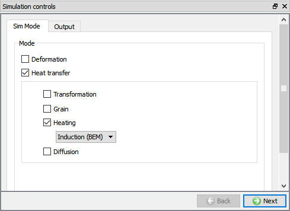
Simulation control window.
In Material list page, using  option load the material from file AL 1100 COLD [70F(20C)].key available under /3D/LABS/Induction_Heating/Hot_switching.
Similarly, load the material from file coil.key. This can be done as shown in Fig. 3DINDL3.5. by clicking
option load the material from file AL 1100 COLD [70F(20C)].key available under /3D/LABS/Induction_Heating/Hot_switching.
Similarly, load the material from file coil.key. This can be done as shown in Fig. 3DINDL3.5. by clicking
 button. Click
button. Click  to Objects page.
to Objects page.
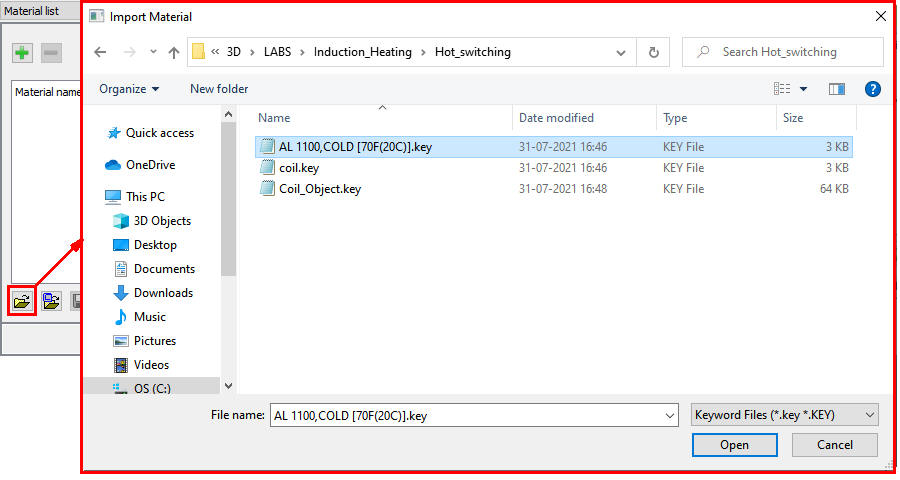
Loading material into Material list.
By default, 3 objects are added into the objects list. We require only two objects for this lab, hence delete the last object “Bottom Die”. Click  to Workpiece page (See Fig. 3DINDL3.6.).
to Workpiece page (See Fig. 3DINDL3.6.).
Adding required objects in Object page.
Keep default object name as “Workpiece”, Temperature as 20°C and object type as “Plastic” as shown in Fig. 3DINDL3.7. Click  to Geometry page.
to Geometry page.
Workpiece object page.
In Geometry page, click on  link and create cylinder geometry with Diameter(2R) 200mm and Height (H) 300mm as
shown in the Fig. 3DINDL3.8. Click
link and create cylinder geometry with Diameter(2R) 200mm and Height (H) 300mm as
shown in the Fig. 3DINDL3.8. Click  button to close the Geometry
Primitive page.
button to close the Geometry
Primitive page.
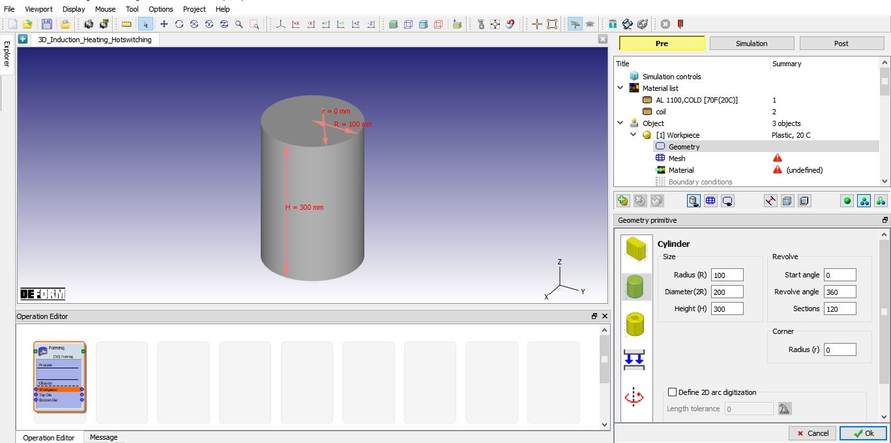
Defining Workpiece Geometry.
Brick Mesh settings in Geometry page:
We will be generating brick mesh for Workpiece. To generate the brick mesh, click on the  link in the geometry page. Select
the "Revolve" radio button and select revolve type as “Full Revolve”, accept the default revolve angle as shown in ( Fig. 3DINDL3.9.).
Click on the
link in the geometry page. Select
the "Revolve" radio button and select revolve type as “Full Revolve”, accept the default revolve angle as shown in ( Fig. 3DINDL3.9.).
Click on the  button to exit the brick mesh geometry setup.
button to exit the brick mesh geometry setup.
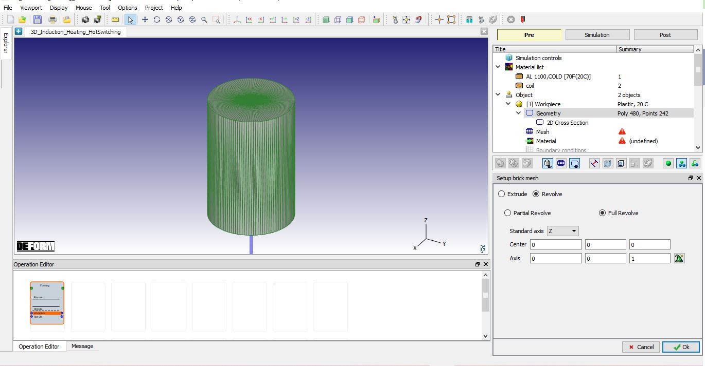
Defining brick mesh settings in geometry page.
Switch to expert mode using  to define brick mesh settings. From General tab of Mesh page, select the "Brick Mesh" radio button and the
"Uniform thickness" radio button, set the "# of layers" to 60 as shown in Fig. 3DINDL3.10. In the "2D Cross Section" tab, set the Number of elements as 200, Thickness elements as 4 and the Size ratio as 1. Click on
to define brick mesh settings. From General tab of Mesh page, select the "Brick Mesh" radio button and the
"Uniform thickness" radio button, set the "# of layers" to 60 as shown in Fig. 3DINDL3.10. In the "2D Cross Section" tab, set the Number of elements as 200, Thickness elements as 4 and the Size ratio as 1. Click on  button and click
button and click  in Default
Boundary conditions popup to assign default BCC as shown Fig. 3DINDL3.11. Click
in Default
Boundary conditions popup to assign default BCC as shown Fig. 3DINDL3.11. Click  to assign material.
to assign material.
Brick mesh settings in mesh page for Workpiece.
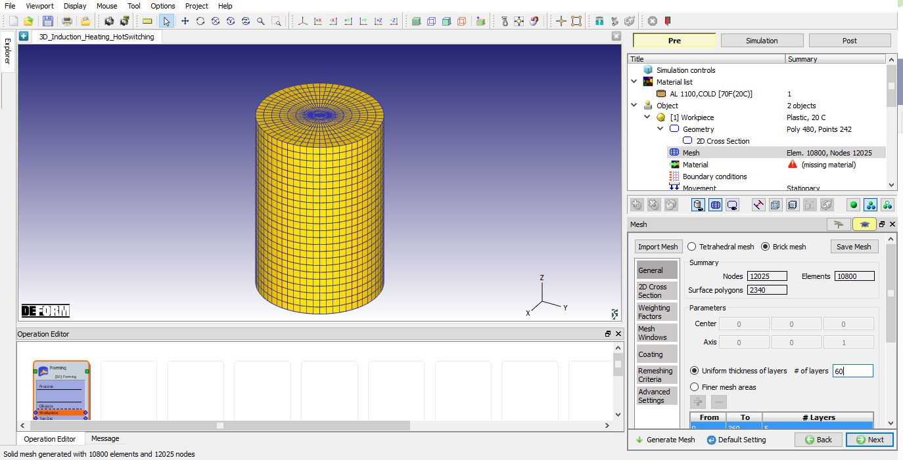
2D Cross-section mesh settings for Workpiece and mesh generated.
Click on the AL 1100 COLD[70F(20C)] in the Material window to assign the material to Workpiece as shown in Fig. 3DINDL3.12. Click  to Boundary conditions page.
to Boundary conditions page.
Assigning Material to Workpiece.
In Boundary conditions page, check whether the Heat exchange with environment Boundary condition has been assigned to the workpiece surface by default during mesh generation. If it is not applied, then add Heat exchange with environment BCC to all surfaces.
Click on the Induction BEM – Heating Surface, click on  so that all surfaces are selected, then assign BCC by clicking on
so that all surfaces are selected, then assign BCC by clicking on  . Added Induction BEM - Heating surface is as shown in Fig. 3DINDL3.13. Click
. Added Induction BEM - Heating surface is as shown in Fig. 3DINDL3.13. Click  until Top Die object page.
until Top Die object page.
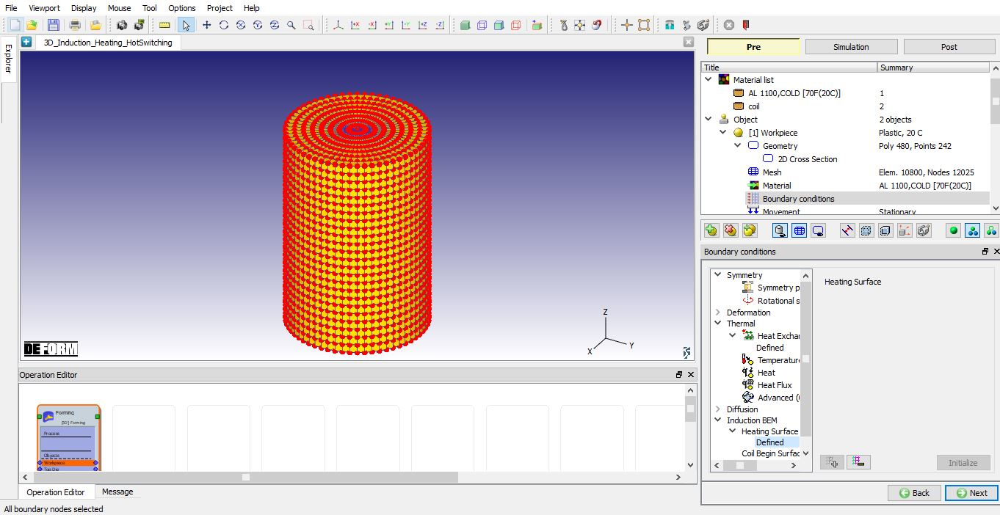
Assigning Induction BEM BCC.
In Top Die page, change the object name to Coil. Using  option, import Coil_Object.key from /3D/LABS/Induction_Heating/ Hot_switching folder.
The imported object is having Coil geometry along with mesh data as shown in Fig. 3DINDL3.14. Since, we don’t need to generate
geometry and mesh, we will navigate using
option, import Coil_Object.key from /3D/LABS/Induction_Heating/ Hot_switching folder.
The imported object is having Coil geometry along with mesh data as shown in Fig. 3DINDL3.14. Since, we don’t need to generate
geometry and mesh, we will navigate using  until Material page.
until Material page.
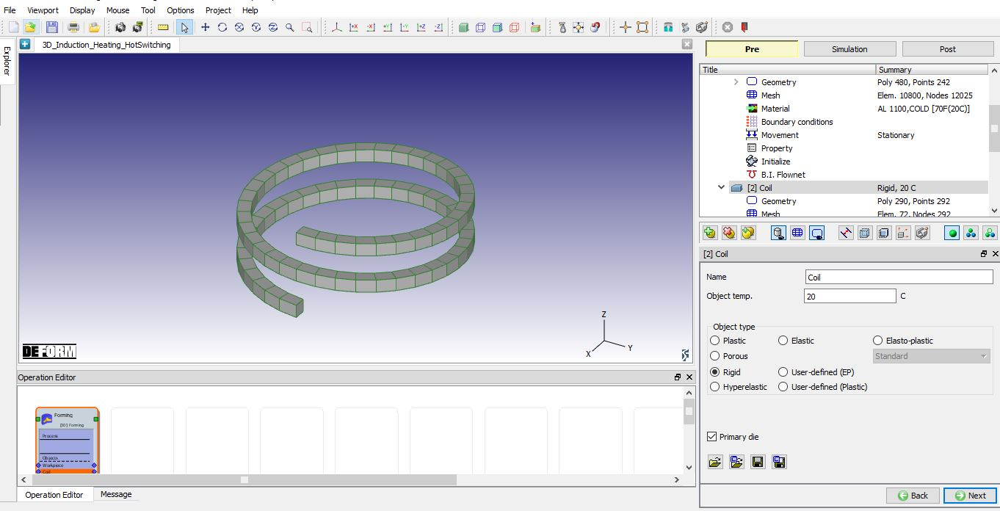
Importing Coil object data.
Click on the Coil in the Material page to assign the material to Coil as shown in Fig. 3DINDL3.15. Click  to Boundary conditions page.
to Boundary conditions page.
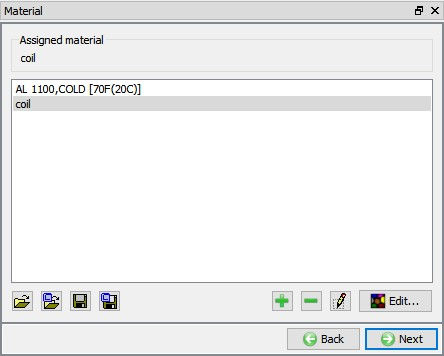
Assigning material to Coil.
In BCC page, under Induction BEM from BCC tree, select Heating Surface option and select all surfaces of the Coil using  and
then click on
and
then click on  to finish the assignment (See Fig. 3DINDL3.16.).
to finish the assignment (See Fig. 3DINDL3.16.).
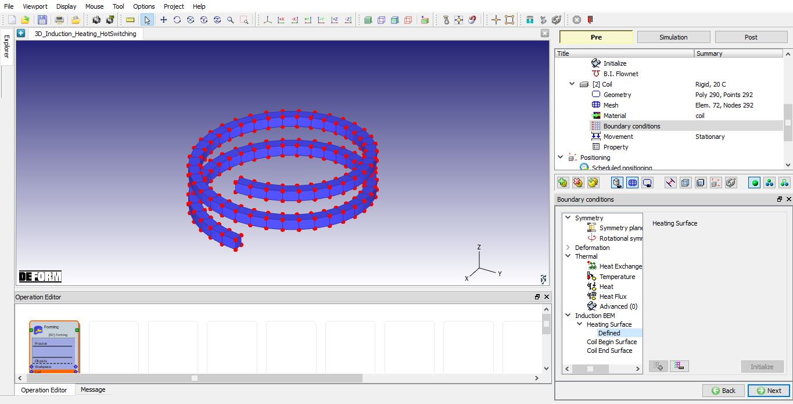
Assigning Heating Surface BCC.
Select Coil Begin surface option under Induction BEM BCC, select Coil begin surface and assign using  as shown Fig. 3DINDL3.17.
as shown Fig. 3DINDL3.17.
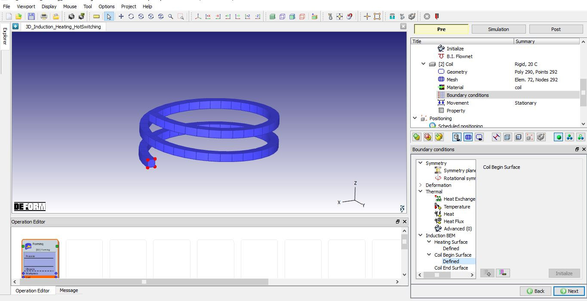
Assigning Coil Begin Surface BCC.
Similarly, select Coil End Surface option under Induction BEM BCC, select Coil End surface and assign using  as shown in Fig. 3DINDL3.18. Click
as shown in Fig. 3DINDL3.18. Click  until Properties page.
until Properties page.
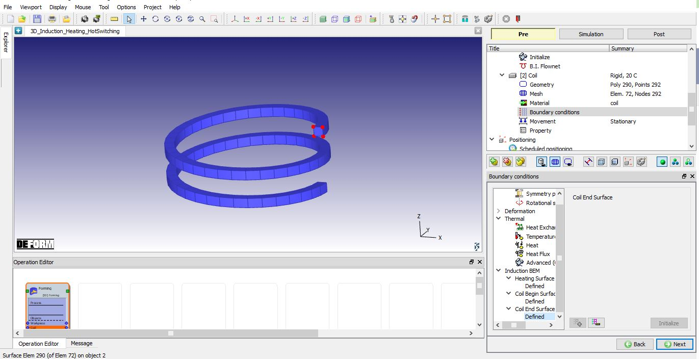
Assigning Coil End Surface BCC.
Select "Heating" tab in object “Properties” page, select Dual radio button from Current frequency type. Select “Hot switching”
radio button as Dual frequency type and define frequency information as, f1=1000, f2=10000, w1=0.5 and w2=0.5 under Dual frequency
as shown in Fig. 3DINDL3.19. Select Volume charge type as Current density and
define constant value 65 under “Data Definition” tab as shown in Fig. 3DINDL3.19. Click  until Step page.
until Step page.
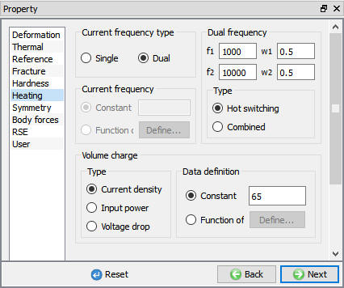
Coil Property.
In Step controls page, define Number of Simulation steps as 40 and Step Increment to save as 1. Select Time as Solution step definition type and define constant 0.1 sec/step as step definition as shown in Fig. 3DINDL3.20. Click on  button to Generate database page.
button to Generate database page.
Defining step controls for simulation.
In Generate database page, click the  button to have the program check to see if anything was missed in the problem setup. During the checking process, messages in the red color
signify data that needs to be fixed before a simulation can be run (such as when you forget to define any material data).
button to have the program check to see if anything was missed in the problem setup. During the checking process, messages in the red color
signify data that needs to be fixed before a simulation can be run (such as when you forget to define any material data).
Click on  button to generate the database.
button to generate the database.
Once the database has been generated, switch to the Simulation mode by clicking on  button above the operation tree. Click on the
button above the operation tree. Click on the  action label to open the Run Options dialog as shown in Fig. 3DINDL3.21. Use the default Continue Run option
to select “Continue from the last step” (from step -1) option and then select the Simulation mode as Interactive. Click on
action label to open the Run Options dialog as shown in Fig. 3DINDL3.21. Use the default Continue Run option
to select “Continue from the last step” (from step -1) option and then select the Simulation mode as Interactive. Click on  button to run the simulation.
button to run the simulation.
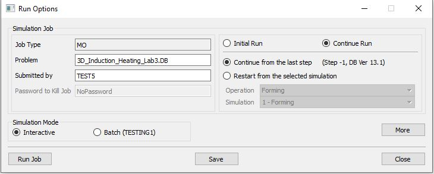
Run Simulation window.
The progress of the simulation can be monitored as it is running by looking at the Simulation Message tab and Simulation Graphics from the Graphics display region in Simulation mode. if the  option is checked in Simulation Message tab, which is the default setting, the Message file will refresh automatically.
option is checked in Simulation Message tab, which is the default setting, the Message file will refresh automatically.
The Message file provides information about which simulation step the simulation is currently on and information dealing with how well the simulation is running.
When the simulation is completed, review the results by switching to Post mode using the  button above the Simulation tool bar.
button above the Simulation tool bar.
In Step Browser, click on All button
and plot Temperature state variable, observe the temperature distribution at last step which should look like as shown in Fig. 3DINDL3.22.
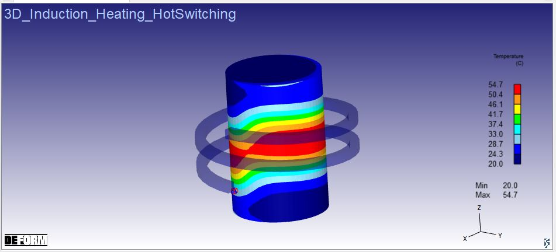
Temperature distribution at the last step.